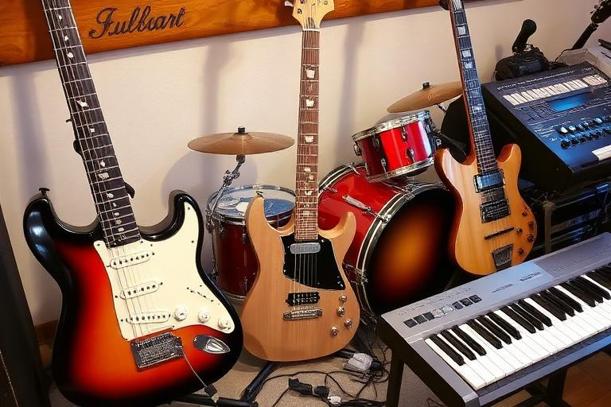

Instruments and production
Gear & Stage Equipment
RockMundo separates the equipment your character uses from the larger production a band brings to the stage. Understanding that distinction helps you spend money where it solves a real problem rather than assuming every expensive item contributes in the same way.

In brief
Buy personal gear that fits your actual instrument and activities. Treat stage equipment as a band production decision tied to the size and demands of a show. A balanced loadout is generally more useful than overspending on one impressive item while leaving other needs uncovered.
Personal gear
Character gear is the equipment associated with your own musicianship and inventory. Its value depends on whether it is appropriate to the role you actually play.
- Match equipment to a relevant instrument or performance role.
- Do not assume price alone makes an item useful to your build.
- Keep enough money available for travel, rehearsal and recording instead of tying all cash up in upgrades.
- Remember that skill and preparation remain the foundation underneath equipment.
Band stage equipment

Stage equipment supports the full show: sound, monitoring, instruments and production resources need to fit what the band is trying to deliver. Larger or more ambitious shows can justify stronger production, but buying ahead of the band's needs can create unnecessary cost and logistics.
Sound
Production needs to support clear, reliable performance rather than simply add a high equipment total.
Stage setup
How a show is configured works together with equipment, crew and the venue.
Crew
Skilled crew help turn equipment into an effective production rather than leaving it as unused potential.
Transport
Touring equipment has a logistical cost: vehicle capacity, load-in and routing all become more important as production grows.
Building a useful loadout
- Start with the show. Consider venue size, band roles and what the performance actually needs.
- Cover essentials. Solve missing or weak production areas before chasing prestige upgrades.
- Assign crew where useful. Equipment and people should complement each other.
- Check transport and schedule. A production package has to reach the venue and fit setup windows.
- Review after gigs. Use outcome and readiness feedback to identify the next meaningful upgrade.
Does better equipment always improve the result?
Better equipment can raise the quality and reliability of the environment, but RockMundo deliberately prevents equipment from becoming a raw substitute for musicianship. Prepared songs, relevant skills, member attendance, chemistry, condition and venue context still matter.
When should a band upgrade?
Upgrade when the current setup is becoming the limiting part of otherwise well-prepared shows, or when a larger tour/venue tier creates new production needs. If the band still struggles with repertoire, attendance, rehearsal or finances, equipment may not be the first problem to solve.